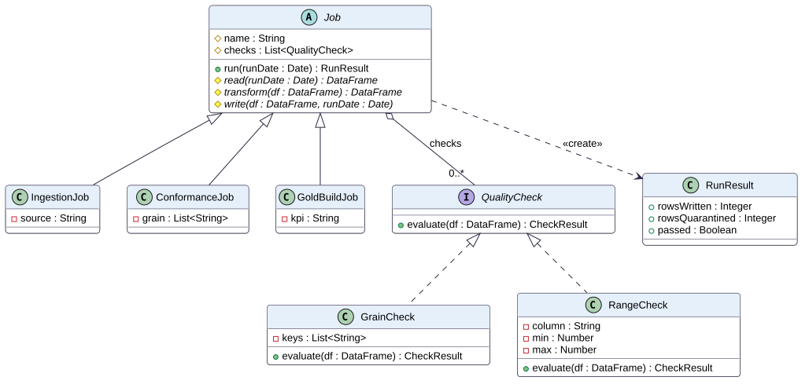
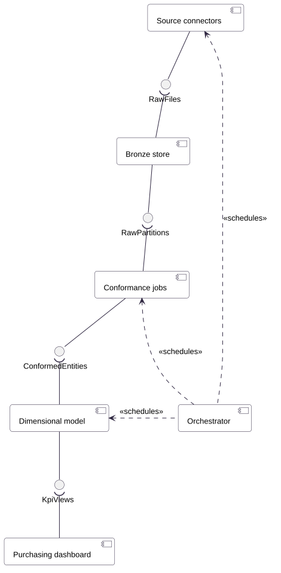
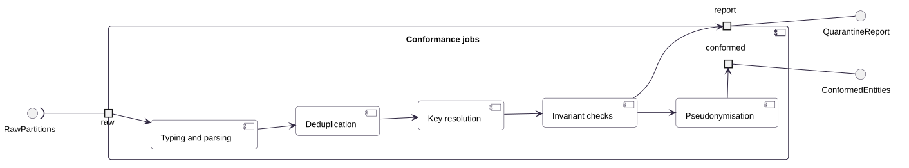
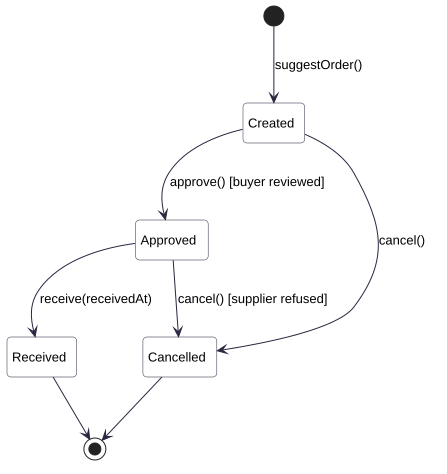
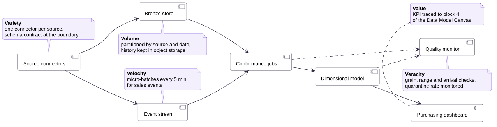

1. How to read this material
This material accompanies Lesson 3, which follows a flipped format, and it is also meant to be consulted later in the module as a reference. Sections 1 to 19 and the three self-studies are studied before the session, a thirty-minute exposition consolidates them, and the remaining seventy minutes are the graded Architecture Activity, done in class.
The text is organised in five parts, and each part can be read on its own. Part I places architectural modelling in the RM-ODP, the reference model that structures the whole module. Part II teaches the UML diagrams that the module uses, separating the static models, which describe what the system is made of, from the dynamic models, which describe how its parts behave over time. Part III explains how a data platform is organised, from the sources to the consumers, and details the medallion architecture. Part IV treats Big Data as a set of quality requirements that the architecture must satisfy, and Part V applies everything to the running example and prepares the activity.
Every UML diagram in this material is written in PlantUML, a textual notation, and each listing is followed by the image that PlantUML generates from it. The listings can be copied with the button in their header or downloaded as .puml files, so that the group can start the diagrams of its own project from a working example instead of an empty page. The published files also carry a short style header with colours and fonts, which the listings omit because it does not change the meaning of the diagram.
The examples continue the fictitious pharmacy chain used in Lessons 1 and 2. The chain must deliver a weekly stock-out rate of continuous-use medicines to its purchasing team, from three sources with very different behaviour: point-of-sale (POS) terminals that resend files after connection losses, an ERP with a nightly extract whose stock counts may be corrected up to three days later, and suppliers whose CSV files change layout without notice.
2. Architecture, models and views
The software architecture of a system is the set of structures needed to reason about it, made of elements, the relations among them and the properties of both. The definition, adopted by Bass, Clements and Kazman, has a practical consequence for data work. An architecture is useful to the extent that it lets someone predict a property of the system, such as whether the indicator will be ready on Monday morning, before the system is built or changed. A drawing that cannot support such a prediction is decoration, however carefully it was made.
No single structure answers every question. The structure that shows which jobs exist and which data each one consumes says nothing about the machines on which those jobs run, and the structure that shows the machines says nothing about the meaning of the data. For this reason, architecture is documented through several views, each one a representation of one structure for one group of concerns. The international standard ISO/IEC/IEEE 42010 formalises this idea: stakeholders have concerns, a viewpoint establishes the conventions for building a view that addresses certain concerns, and a view is the result of applying a viewpoint to a particular system.
A model is the content of a view. The UML class diagram of the pharmacy domain is a model, and so is the component diagram of the pipeline. Models are abstractions, which means that they omit deliberately. The class diagram omits physical storage, and the component diagram omits the code inside each job. What a model omits is as much a design decision as what it shows, because the omission tells the reader which questions the model is not meant to answer.
Architecture of data systems
In a data platform, the architecture has to answer questions that ordinary application architecture rarely faces with the same intensity. It must explain how data moves from systems that the team does not control, how errors in that data are detected and contained, how the history of the data is preserved and how the cost of processing grows with the volume. Gorton and Klein observed that in Big Data systems the decisions about distribution, data and deployment become inseparable, so that a choice of database already constrains the deployment and the consistency model of the whole platform. Modelling with several views is the instrument that keeps these decisions visible and allows each one to be justified.
Lessons 1 and 2 produced the enterprise and information views of the platform through the Data Model Canvas and the exploratory analysis. This lesson produces the computational view, and Sprints 4 and 5 will add the engineering and technology views. Each view is a model of the same platform, which is why the correspondences between them, discussed in section 12, matter as much as the views themselves.
3. RM-ODP in depth
The Reference Model of Open Distributed Processing (RM-ODP) is the international standard ISO/IEC 10746, published with identical text as ITU-T Recommendations X.901 to X.904. It was written to specify systems whose parts run on different machines, belong to different organisations and must still cooperate under shared rules. A data platform fits that description, since it collects data produced by several areas, processes it on distributed infrastructure and delivers it to consumers subject to access policies. Lesson 1 introduced the standard and its first two viewpoints, and this section completes the picture with the elements needed to design the computational, engineering and technology views.
The five viewpoints and their languages
Part 3 of the standard defines five viewpoints, each with its own language, that is, its own set of concepts and rules. They are not phases of a project, because all of them describe the same system at the same time. They are, however, ordered from the most abstract to the most concrete, and decisions in an earlier viewpoint constrain the later ones.
Community, objective, roles, processes and policies. In the case: purchasing team, weekly order decision, LGPD.
Information objects and invariant, static and dynamic schemas. In the case: stock position, grain, onHand ≥ 0.
Computational objects and their interfaces. In the case: connectors, conformance jobs, dimensional model.
Nodes, channels and transparencies. In the case: orchestration, retries, partitioning, replication.
Products and standards. In the case: Spark, Parquet, PostgreSQL, object storage, Metabase.
The computational language
The computational viewpoint describes the system as a configuration of computational objects that interact through interfaces, without saying where the objects run. The standard distinguishes three kinds of interface. An operation interface is one in which a client invokes an operation on a server, either as an interrogation, which returns a result, or as an announcement, which does not. A signal interface is based on elementary one-way events, and a stream interface carries a continuous flow, such as a feed of sales events. A computational object may offer several interfaces of different kinds, and a binding is the association that allows two interfaces to interact.
These concepts map directly onto data platforms. A conformance job that answers a request to process one day offers an operation interface of the interrogation kind, because it returns a result describing the run. The notification that a file has landed in object storage is a signal. The flow of POS events consumed in micro-batches is a stream. Naming the kind of each interface clarifies early which components can be scheduled in batch and which must be kept running.
The engineering language
The engineering viewpoint describes the mechanisms that support the computational objects when they are distributed. Its vocabulary is more technical. A basic engineering object corresponds to a computational object at run time. Engineering objects are grouped into clusters, clusters into capsules, which roughly correspond to processes, and capsules run on nodes, which are the physical or virtual machines, each controlled by a nucleus, which plays the role of the operating system. Objects on different nodes communicate through channels, built from stubs, binders and protocol objects, which handle respectively the transformation of the data, the integrity of the binding and the network protocol.
The concept of this viewpoint that matters most for data work is the distribution transparency. A transparency hides from the user of an object some consequence of distribution, at the price of mechanisms that the engineering view must provide. The standard lists eight of them, and the table below shows what each one means in a data platform.
| Transparency | What it hides | Mechanism in a data platform |
|---|---|---|
| Access | Differences in data representation and invocation | Connectors that convert CSV, JSON and database extracts into a common format |
| Failure | The failure and recovery of objects | Retries of failed tasks and idempotent reruns of a partition |
| Location | Where an object is | Logical table names resolved by a catalogue instead of physical paths in the code |
| Migration | That an object moved, from the object itself | Moving a job between workers without changing its code |
| Relocation | That an object moved, from its clients | Changing the storage bucket of a table without breaking its readers |
| Replication | That there are several copies of an object | Replicated object storage and read replicas of the Gold database |
| Persistence | That an object is activated and deactivated | Clusters that start for a run and stop afterwards, with state kept in storage |
| Transaction | The coordination needed for consistency | Atomic overwrite of a partition, so that readers never see half a day |
The technology language
The technology viewpoint records the products and standards chosen to implement the system and supports conformance testing, that is, checking whether the implementation behaves as the other viewpoints specify. It is the most volatile viewpoint, because products change, prices change and teams change. Keeping it separate protects the other views from that volatility. If the group replaces PostgreSQL by another database, the information and computational views remain valid, and only the technology view and the correspondences that point to it need to change.
Correspondences and conformance
Because the viewpoints describe the same system, they must not contradict each other, and the RM-ODP requires explicit correspondences between them. In a data platform, the most important correspondences are the following. Each enterprise policy must be enforced by some computational object, as the LGPD rule on prescription data is enforced by the pseudonymisation step of the conformance jobs. Each invariant of the information viewpoint must be checked by some computational object, as the uniqueness of the stock position grain is checked before Silver is published. Each computational object must be placed on some engineering node, and each node must be realised by some technology. A component that corresponds to nothing in the information view is processing data that nobody asked for, and an invariant that corresponds to no component exists only on paper.
RM-ODP and UML
The RM-ODP defines concepts but no graphical notation, and the standard ISO/IEC 19793, known as UML4ODP, specifies how to express each viewpoint in UML through a profile. The table summarises the diagrams most often used for each viewpoint, and it also serves as a map of Part II of this material.
| Viewpoint | Typical UML diagrams | Where in this material |
|---|---|---|
| Enterprise | Use case and activity diagrams for processes, class diagrams for communities and roles | Lesson 1 and the Data Model Canvas |
| Information | Class diagrams for information objects and invariants, object diagrams for the static schema, state machine diagrams for the dynamic schema | Sections 7 and 10 |
| Computational | Component diagrams for objects and interfaces, sequence diagrams for interactions | Sections 8 and 9 |
| Engineering | Deployment and composite structure diagrams for nodes, capsules and channels | Section 11 |
| Technology | Deployment diagrams with artefacts and stereotyped nodes | Section 11 |
4. UML: language and diagram families
The Unified Modeling Language (UML) is a general-purpose modelling language maintained by the Object Management Group, whose current version, 2.5.1, was published in 2017 and is also an ISO standard (ISO/IEC 19505). It emerged in the mid-1990s from the merger of the methods of Grady Booch, James Rumbaugh and Ivar Jacobson, which explains why it combines notations for object structure, for behaviour and for requirements. UML is a language, not a method, and it says how to draw a model without saying in which order models should be made or which ones a project needs.
The specification defines fourteen diagram types organised in two families. Structure diagrams show the static structure of the system, that is, the elements that exist and the relations among them, independently of time. Behaviour diagrams show the dynamic behaviour of the elements, that is, how they change and interact over time. Within behaviour diagrams, the interaction diagrams form a subfamily that emphasises the exchange of messages between participants.
| Family | Diagrams | Question it answers |
|---|---|---|
| Structure | Class, object, component, composite structure, package, deployment, profile | What exists in the system and how the parts are related |
| Behaviour | Use case, activity, state machine | What the system does and how its elements change state |
| Behaviour · Interaction | Sequence, communication, interaction overview, timing | Which messages the parts exchange, in which order and when |
A project does not need all fourteen. Fowler observed that most practitioners use a small subset, usually class and sequence diagrams, and that the value of UML lies less in completeness than in communication. In this module, five diagrams cover the needs of a data platform: the class diagram for the information model, the component diagram for the pipeline, the sequence diagram for the main interactions, the state machine for the life cycle of the information objects that change state and the deployment diagram for the engineering and technology views.
Three ways of using UML
Fowler also distinguished three uses of UML, and the distinction helps to calibrate the effort. UML as sketch is used to communicate an idea during a discussion and is discarded afterwards. UML as blueprint is used to document a design in enough detail for someone else to build or review it. UML as programming language generates code from models, a use that has remained marginal. The Architecture Activity asks for a blueprint, which means that each element of the diagram must be named, explained in the text and consistent with the other views.
5. Static and dynamic modelling
Static modelling describes the structure of a system as it is at any instant, ignoring the passage of time. A static model answers questions such as which entities exist, which attributes they have, which components make up the platform and which interfaces connect them. It is called static because its content does not depend on the order in which things happen. The class diagram and the component diagram are the two static models used most often, and they work at different levels of abstraction. The class diagram describes concepts and their relationships, while the component diagram describes replaceable parts of the system and the contracts between them.
Dynamic modelling describes behaviour, that is, how the elements of the system interact and change over time. A dynamic model answers questions such as which component calls which, in what order, what happens when a file is missing and through which states a purchase order passes. The sequence diagram shows one scenario of interaction as a sequence of messages along a time axis, and the state machine diagram shows the possible life of a single object as a set of states and transitions.
The two kinds of model depend on each other. A sequence diagram can only send a message to a participant that exists in some static model, and that message must correspond to an operation or interface declared there. Conversely, a static model whose components never appear in any interaction suggests either a missing scenario or a component that does nothing. Designing with both kinds of model is therefore a way of checking each one against the other, which section 12 develops.
Static view
Describes structure independently of time. Elements are classes, components, interfaces, nodes and their relationships. In the module it is produced by class, component and deployment diagrams, and in RM-ODP it corresponds mainly to the static and invariant schemas and to the configuration of computational objects.
Dynamic view
Describes behaviour over time. Elements are messages, events, states and transitions. In the module it is produced by sequence and state machine diagrams, and in RM-ODP it corresponds to the dynamic schema and to the behaviour of computational objects at their interfaces.
The statement that a stock position has one row per product, store and day is static, because it holds at every instant. The statement that the conformance job reads each store partition from Bronze, deduplicates it and overwrites the corresponding Silver partition is dynamic, because it describes an order of events. The first belongs in a class diagram as a constraint, and the second in a sequence diagram as a loop.
6. Writing diagrams as code
PlantUML is an open-source tool that generates UML diagrams from a textual description. A diagram is written between the lines @startuml and @enduml, and the tool computes the layout and produces an image in SVG or PNG. Writing diagrams as text has three advantages for a project team. The source can be versioned in Git together with the code, so that a change to the architecture appears in the same commit as the change to the pipeline. Differences between versions can be reviewed line by line in a pull request. And the layout is computed automatically, which removes the time spent aligning boxes by hand.
The cost is less control over the layout. PlantUML decides where each element goes, and large diagrams can come out wider or more tangled than a hand-drawn version. Three resources help. The directive left to right direction changes the main axis of the layout. Direction hints on arrows, such as -down-> or .left.>, suggest where the target should go. And splitting a large diagram into smaller ones, each answering one question, usually produces a better result than any amount of adjustment.
There are several ways to render the code. The official server at plantuml.com/plantuml renders a diagram pasted into the browser. The PlantUML extension for Visual Studio Code shows a live preview beside the editor. Locally, the tool is a Java program that can be run from the command line, and Kroki offers a container that renders PlantUML and other notations through an HTTP API. The diagrams of this material were generated by the official server from the .puml files published next to the page.
# requires Java; plantuml.jar is downloaded from plantuml.com/download
java -jar plantuml.jar -tsvg docs/architecture/component-pipeline.puml
# or, without installing Java, with the Kroki container
docker run -d -p 8000:8000 yuzutech/kroki
curl -s -H "Content-Type: text/plain" --data-binary @component-pipeline.puml \
http://localhost:8000/plantuml/svg > component-pipeline.svg7. Class diagrams
The class diagram is the central structure diagram of UML. A class describes a set of objects that share the same attributes, operations, relationships and meaning. It is drawn as a rectangle with up to three compartments: the name, the attributes and the operations. Attributes are written as name : Type, and operations as name(parameters) : ReturnType. A visibility marker may precede each member, where + means public, - private, # protected and ~ package.
Class diagrams are used at two levels of abstraction, and confusing them is a frequent source of poor models. A conceptual or domain model describes the concepts of the business, such as product, store and purchase order, without any reference to software. In RM-ODP terms, it is the main notation of the information viewpoint. A design model describes classes of the software, such as jobs, readers and quality checks, with types and visibilities, and it belongs to the computational viewpoint. The two examples below show one of each.
Relationships between classes
The meaning of a class diagram lies mostly in its relationships, and UML provides six that cover nearly every case. An association is a structural link between instances, for example a store and the sale lines registered in it. Multiplicities at each end state how many instances may take part, written as 1, 0..1, 0..* or 1..*. An aggregation is an association in which one side is a whole and the other a part that can exist independently, as stores grouped into a region. A composition is a stronger aggregation in which the part cannot exist without the whole and is deleted with it, as order lines in a purchase order. A generalisation states that a class is a specialisation of another and inherits its features. A realisation states that a class implements the contract defined by an interface. A dependency, finally, is a weaker relationship meaning that a change in one element may affect the other, such as a job that uses a Spark session without keeping it as an attribute.
@startuml
left to right direction
hide empty members
class "ConformanceJob " as C6
class "SparkSession" as K6
C6 ..> K6 : dependency
interface "QualityCheck" as Q5
class "GrainCheck" as G5
Q5 <|.. G5 : realization
class "Job" as J4
class "ConformanceJob" as C4
J4 <|-- C4 : generalization
class "PurchaseOrder" as P3
class "OrderLine" as O3
P3 *-- "1..*" O3 : composition
class "Region" as R2
class "Store " as S2
R2 o-- "1..*" S2 : aggregation
class "Store" as S1
class "SaleLine" as L1
S1 "1" -- "0..*" L1 : association
@enduml
The test for composition is the life cycle of the part. If deleting the purchase order must delete its lines, and a line can never move to another order, the relationship is a composition. If the part survives the whole, as a store survives the reorganisation of regions, an aggregation or a plain association is more accurate. When in doubt, a plain association with clear multiplicities is safer than an aggregation whose meaning the reader has to guess.
The domain model of the case
The domain model translates the information objects listed in Lesson 1 into UML. Each information object becomes a class, each relationship becomes an association with multiplicities, and the invariants become constraints written between braces in a note. The enumeration OrderStatus declares the possible values of the status of a purchase order, which section 10 turns into a state machine.
@startuml
class Supplier {
supplierId : String
name : String
leadTimeDays : Integer
}
class Product {
productId : String
name : String
continuousUse : Boolean
isCritical() : Boolean
}
class Store {
storeId : String
city : String
region : String
}
class StockPosition {
date : Date
onHand : Integer
isStockOut() : Boolean
}
class SaleLine {
saleId : String
quantity : Integer
soldAt : DateTime
}
class PurchaseOrder {
orderId : String
status : OrderStatus
createdAt : DateTime
approve()
receive(receivedAt : DateTime)
cancel()
}
class OrderLine {
quantity : Integer
}
enum OrderStatus {
CREATED
APPROVED
RECEIVED
CANCELLED
}
Supplier "1" -- "1..*" Product : supplies >
Product "1" -- "0..*" StockPosition
Store "1" -- "0..*" StockPosition
Product "1" -- "0..*" SaleLine
Store "1" -- "0..*" SaleLine
Supplier "1" -- "0..*" PurchaseOrder : receives >
Store "1" -- "0..*" PurchaseOrder : places >
PurchaseOrder "1" *-- "1..*" OrderLine
OrderLine "0..*" -- "1" Product
PurchaseOrder ..> OrderStatus
note bottom of StockPosition
{onHand >= 0}
{unique (store, product, date)}
end note
@enduml![Class diagram of the pharmacy domain with the classes Supplier, Store, PurchaseOrder, OrderLine, Product, SaleLine and StockPosition and the enumeration OrderStatus; a supplier supplies one or more products and receives purchase orders, a store places purchase orders and has sale lines and stock positions, a purchase order is composed of one or more order lines each referring to one product, and a note on StockPosition states the constraints onHand greater than or equal to zero and uniqueness of store, product and date](img/lesson-3/class-domain.svg)
Reading the diagram aloud is a good test of its correctness. A supplier supplies one or more products, and each product is supplied by exactly one supplier, which is a simplification the group must confirm with the partner. A store has zero or more stock positions, and each stock position belongs to exactly one store and one product. The note on StockPosition states the two invariants that Silver must enforce, so the class diagram already contains the specification of two quality checks.
From the domain model to the tables
A class diagram is not a database schema, but the translation is systematic. Each class becomes a table, each attribute a column, each association with multiplicity one on one side becomes a foreign key on the other side, and each composition becomes a foreign key plus a deletion rule. The constraints in the note become a check constraint and a unique key. In a data platform, the same translation guides the Silver tables, where the constraints are enforced by quality checks rather than by the database, because Parquet files do not enforce keys.
CREATE TABLE silver.stock_position (
store_id TEXT NOT NULL REFERENCES silver.store(store_id),
product_id TEXT NOT NULL REFERENCES silver.product(product_id),
date DATE NOT NULL,
on_hand INTEGER NOT NULL CHECK (on_hand >= 0), -- {onHand >= 0}
PRIMARY KEY (store_id, product_id, date) -- {unique (store, product, date)}
);
CREATE TABLE silver.order_line (
order_id TEXT NOT NULL REFERENCES silver.purchase_order(order_id) ON DELETE CASCADE, -- composition
product_id TEXT NOT NULL REFERENCES silver.product(product_id),
quantity INTEGER NOT NULL CHECK (quantity > 0),
PRIMARY KEY (order_id, product_id)
);A design model for the pipeline code
The second example is a design model of the pipeline code. An abstract class Job defines the template of every run, with an operation run that calls three abstract operations, read, transform and write, implemented by each subclass. This arrangement is the Template Method pattern, and its advantage is that logging, timing and the execution of quality checks are written once, in run, instead of being repeated in every job. Quality checks are defined by an interface, so that a new kind of check can be added without changing the jobs.
@startuml
abstract class Job {
# name : String
# checks : List<QualityCheck>
+ run(runDate : Date) : RunResult
# {abstract} read(runDate : Date) : DataFrame
# {abstract} transform(df : DataFrame) : DataFrame
# {abstract} write(df : DataFrame, runDate : Date)
}
class IngestionJob {
- source : String
}
class ConformanceJob {
- grain : List<String>
}
class GoldBuildJob {
- kpi : String
}
interface QualityCheck {
+ evaluate(df : DataFrame) : CheckResult
}
class GrainCheck {
- keys : List<String>
+ evaluate(df : DataFrame) : CheckResult
}
class RangeCheck {
- column : String
- min : Number
- max : Number
+ evaluate(df : DataFrame) : CheckResult
}
class RunResult {
+ rowsWritten : Integer
+ rowsQuarantined : Integer
+ passed : Boolean
}
Job <|-- IngestionJob
Job <|-- ConformanceJob
Job <|-- GoldBuildJob
Job o-- "0..*" QualityCheck : checks
QualityCheck <|.. GrainCheck
QualityCheck <|.. RangeCheck
Job ..> RunResult : <<create>>
@enduml
from abc import ABC, abstractmethod
from dataclasses import dataclass
class QualityCheck(ABC): # «interface»
@abstractmethod
def evaluate(self, df) -> "CheckResult": ...
@dataclass
class RunResult:
rows_written: int
rows_quarantined: int
passed: bool
class Job(ABC): # abstract class
def __init__(self, name, checks=()):
self._name = name # protected (#)
self._checks = list(checks) # aggregation 0..*
def run(self, run_date) -> RunResult: # template method
df = self.transform(self.read(run_date))
results = [c.evaluate(df) for c in self._checks]
passed = all(r.passed for r in results)
if passed:
self.write(df, run_date)
return RunResult(df.count() if passed else 0,
sum(r.failed_rows for r in results), passed)
@abstractmethod
def read(self, run_date): ...
@abstractmethod
def transform(self, df): ...
@abstractmethod
def write(self, df, run_date): ...
class ConformanceJob(Job): # generalisation
...8. Component diagrams
The component diagram shows the modular parts of a system and the interfaces through which they connect. A component is a replaceable unit with a well-defined responsibility, which encapsulates its content and exposes its behaviour only through interfaces. A provided interface is a set of services that the component offers, drawn as a ball, or lollipop. A required interface is a set of services that the component needs, drawn as a socket, a half-circle. An assembly connector joins a ball to a socket and states that one component satisfies what the other needs. A dependency, drawn as a dashed arrow, records a relationship that is not a data contract, such as the scheduling of jobs by an orchestrator.
The component diagram is the main notation of the computational viewpoint, because it shows functions and interfaces without showing machines. This property is also its main rule of use. Servers, clusters and cloud services do not belong in it, because they belong to the engineering and technology views and are drawn in the deployment diagram. A component diagram that mixes a box called Spark cluster with a box called Conformance jobs is comparing two different kinds of thing, and the reader cannot tell whether the arrow between them is a data flow or an installation.
Black-box view of the pipeline
The black-box view shows each component only from outside, through its interfaces. For a data pipeline it makes the contracts between layers visible. The connectors provide raw files, the Bronze store requires them and provides raw partitions, the conformance jobs require those partitions and provide conformed entities, and so on until the dashboard. Each interface marks a point where a quality check can be placed, because it is the boundary at which one component promises something to the next. In PlantUML, the line C -- I1 declares that component C provides interface I1, and I1 )-- B declares that component B requires it.
@startuml
component "Source connectors" as C
component "Bronze store" as B
component "Conformance jobs" as S
component "Dimensional model" as G
component "Purchasing dashboard" as D
component "Orchestrator" as O
interface "RawFiles" as I1
interface "RawPartitions" as I2
interface "ConformedEntities" as I3
interface "KpiViews" as I4
C -- I1
I1 )-- B
B -- I2
I2 )-- S
S -- I3
I3 )-- G
G -- I4
I4 )-- D
O .left.> C : <<schedules>>
O .left.> S : <<schedules>>
O .left.> G : <<schedules>>
@enduml
White-box view of a component
The white-box view opens a component to show its internal parts. Ports, drawn as small squares on the border, are the points through which the component interacts with its environment, and delegation connectors link each port to the internal part that actually handles the request. The diagram below opens the conformance jobs and shows the five steps of the Silver layer. The view makes visible that pseudonymisation happens before data leaves the component, which is the correspondence with the LGPD policy of the enterprise viewpoint, and that the invariant checks produce a second output, the quarantine report, which is itself an interface other components can consume.
@startuml
left to right direction
interface "RawPartitions" as IN
interface "ConformedEntities" as OUT
interface "QuarantineReport" as QR
component "Conformance jobs" as CJ {
portin "raw" as p1
portout "conformed" as p2
portout "report" as p3
component "Typing and parsing" as T
component "Deduplication" as DD
component "Key resolution" as K
component "Invariant checks" as V
component "Pseudonymisation" as P
p1 --> T
T --> DD
DD --> K
K --> V
V --> P
P --> p2
V --> p3
}
IN )-- p1
p2 -- OUT
p3 -- QR
@enduml
Naming interfaces
An interface name should describe what crosses the boundary, and its documentation should state the contract. For the interface ConformedEntities, the contract might state that each table has a declared grain without duplicates, that types are fixed, that sensitive fields are pseudonymised and that the data of a day is published atomically. When the contract is written, the downstream component can rely on it without checking it again, and a failure can be attributed to the component whose contract was broken.
| Interface | Provider | Contract (what the consumer may rely on) |
|---|---|---|
RawFiles | Source connectors | Every delivery stored as received, with source, ingestion timestamp and batch identifier |
RawPartitions | Bronze store | Data partitioned by source, entity and ingestion date, never modified after writing |
ConformedEntities | Conformance jobs | Declared grain without duplicates, fixed types, invariants enforced, sensitive fields pseudonymised |
KpiViews | Dimensional model | Indicators computed with the formula, unit and periodicity of block 4 of the canvas, refreshed by Monday 07:00 |
9. Sequence diagrams
The sequence diagram is the most used interaction diagram of UML. It shows the participants of one scenario arranged horizontally and the messages they exchange arranged vertically, with time flowing from top to bottom. Each participant has a lifeline, a dashed vertical line that represents its existence during the scenario. An activation bar, a thin rectangle on the lifeline, shows the period during which the participant is executing an operation.
Kinds of message
Messages are drawn as arrows between lifelines, and the arrowhead carries meaning. A synchronous message, drawn with a filled arrowhead, means that the sender waits for the receiver to finish, as the orchestrator waits for the conformance job to return its result. An asynchronous message, drawn with an open arrowhead, means that the sender continues without waiting, as the conformance job notifies the Gold build and ends. A reply, drawn as a dashed arrow, returns the result of a synchronous call. A self-message, an arrow that leaves and returns to the same lifeline, represents an operation that a participant performs on itself. In PlantUML these are written ->, ->> and -->.
Combined fragments
A single sequence diagram can show more than one path through combined fragments, rectangles with an operator in the upper left corner. The operator alt shows alternatives, each with a guard between brackets, of which exactly one is executed. The operator opt shows an optional block executed only if its guard is true. The operator loop repeats its content while the guard holds or for each element of a collection. The operator par shows blocks that run in parallel, and break shows a block after which the enclosing interaction ends. The operator ref, finally, refers to another interaction defined elsewhere, which keeps diagrams small by delegating detail to other diagrams.
The daily run of the pipeline
The first scenario is the nightly run that loads one day of POS data. The orchestrator asks the POS connector to extract the day, and the connector writes the batch to Bronze with its metadata. The orchestrator then asks the quality checks whether all stores delivered. If they did, it runs the conformance job, which loops over the store partitions, deduplicates them and overwrites the corresponding Silver partitions. If files are missing, the orchestrator holds the dependent loads and alerts the data custodian. The construction of the Gold model is delegated to another interaction through a ref fragment.
@startuml
autonumber
participant "Orchestrator" as O
participant "POS connector" as P
participant "Bronze store" as B
participant "Quality checks" as Q
participant "Conformance job" as C
participant "Silver store" as S
activate O
O -> P : extract(runDate)
activate P
P -> B : write(batch, metadata)
activate B
B --> P : ack
deactivate B
P --> O : batchId
deactivate P
O -> Q : checkArrival(runDate)
activate Q
alt all stores delivered
Q --> O : complete
deactivate Q
O -> C : run(runDate)
activate C
loop for each store partition
C -> B : read(store, runDate)
activate B
B --> C : rows
deactivate B
C -> C : deduplicate(rows)
C -> S : overwrite(partition)
end
C --> O : RunResult
deactivate C
else files missing
Q --> O : missing(storeIds)
O -> O : holdDependentLoads()
O ->> O : alertCustodian(storeIds)
end
ref over O, S : Build Gold model and refresh the purchasing dashboard
deactivate O
@enduml![Sequence diagram with the lifelines Orchestrator, POS connector, Bronze store, Quality checks, Conformance job and Silver store: the orchestrator calls extract on the connector, which writes the batch to Bronze and returns a batch identifier; the orchestrator calls checkArrival; in an alt fragment, if all stores delivered, it runs the conformance job, which in a loop for each store partition reads from Bronze, deduplicates and overwrites the Silver partition and returns a RunResult; otherwise the quality checks return the missing stores and the orchestrator holds dependent loads and alerts the custodian asynchronously; a ref fragment refers to building the Gold model and refreshing the dashboard](img/lesson-3/sequence-daily-run.svg)
The diagram makes three architectural decisions explicit that a component diagram cannot show. Conformance waits for the arrival check, which means that a missing store delays the whole day rather than producing an incomplete indicator. Silver is written partition by partition with overwrite, which makes the run idempotent. And the alert to the custodian is asynchronous, so the orchestrator does not wait for a human to read it.
Late corrections
The second scenario describes how the platform absorbs a stock count corrected by an inventory audit up to three days after the fact. It begins with an actor, the inventory auditor, and shows a time break, written in PlantUML with ..., between the correction and the next nightly extract. The conformance job reads Bronze with a lookback window of three days, determines which dates were affected and overwrites only those partitions in Silver, before asynchronously asking the Gold build to reprocess them.
@startuml
autonumber
actor "Inventory auditor" as A
participant "ERP" as E
participant "ERP connector" as N
participant "Bronze store" as B
participant "Conformance job" as C
participant "Silver store" as S
participant "Gold build" as G
A -> E : correctCount(store, product, auditDate)
note right of E : the correction may refer\nto any of the last 3 days
... nightly extract ...
N -> E : extract(changedSince)
activate N
E --> N : corrected rows
N -> B : write(batch, metadata)
deactivate N
C -> B : read(lookback = 3 days)
activate C
C -> C : affectedDates(rows)
loop for each affected date
C -> S : overwrite(partition(date))
end
C ->> G : reprocess(affectedDates)
deactivate C
activate G
G -> G : rebuildWeeklyStockOutRate()
deactivate G
@enduml![Sequence diagram in which the Inventory auditor actor corrects a count in the ERP, a note states that the correction may refer to any of the last three days, a time break marks the nightly extract, the ERP connector extracts the changed rows and writes them to Bronze, the Conformance job reads Bronze with a lookback of three days, computes the affected dates, overwrites the Silver partition of each affected date in a loop and sends an asynchronous reprocess message to the Gold build, which rebuilds the weekly stock-out rate](img/lesson-3/sequence-late-correction.svg)
Drawing this scenario forces a decision that the static models left open: the purchasing team may see the stock-out rate of a past week change after it was first published. The group must decide with the partner whether that is acceptable or whether published weeks should be frozen, and the answer becomes a requirement of the Gold layer.
10. State machines and the dynamic schema
The state machine diagram describes the life of a single object as a set of states and the transitions between them. A state is a condition during which the object satisfies some property or waits for some event. A transition is triggered by an event, may be protected by a guard written between brackets, and may execute an effect. The initial pseudostate, a filled circle, marks where the life begins, and the final state, a circled dot, marks where it ends.
In RM-ODP, the state machine is the natural notation of the dynamic schema of the information viewpoint, which states the changes of state that are allowed. For a data platform this has a concrete use. A transition that the diagram does not allow, such as a purchase order going from created directly to received, is a quality rule that the Silver layer can test. The diagram also tells the architecture whether it must keep the history of states, which is the case when the purchasing team wants to measure how long orders stay in approval.
@startuml
hide empty description
[*] --> Created : suggestOrder()
Created --> Approved : approve() [buyer reviewed]
Created --> Cancelled : cancel()
Approved --> Received : receive(receivedAt)
Approved --> Cancelled : cancel() [supplier refused]
Received --> [*]
Cancelled --> [*]
@enduml
WITH ordered AS (
SELECT order_id, status,
LAG(status) OVER (PARTITION BY order_id ORDER BY changed_at) AS previous
FROM silver.purchase_order_history
)
SELECT *
FROM ordered
WHERE (previous, status) NOT IN (('CREATED', 'APPROVED'), ('CREATED', 'CANCELLED'),
('APPROVED', 'RECEIVED'), ('APPROVED', 'CANCELLED'))
AND previous IS NOT NULL; -- must return no rows11. Deployment diagrams
The deployment diagram shows the physical architecture: the nodes on which the system runs, the artefacts deployed on them and the communication paths between nodes. A node is a computational resource, drawn as a three-dimensional box, and UML distinguishes devices, which are physical or virtual machines, from execution environments, which are software platforms such as a Spark cluster or a container runtime. An artefact is a concrete piece of information used or produced by deployment, such as a script, a package or a file. A communication path, labelled with its protocol, connects two nodes that exchange data.
The deployment diagram belongs to the engineering and technology viewpoints. In engineering terms it shows nodes and channels, and in technology terms it names the products. In the module it will be developed in Sprints 4 and 5, but it is presented here because the clearest way to keep it out of the component diagram is to know where it belongs. Comparing the two diagrams of the case shows the difference. The component diagram has a component called Conformance jobs, and the deployment diagram shows the artefact conformance_job.py deployed on a Spark cluster. The correspondence between the two is the engineering decision of where each function runs.
@startuml
node "Store POS terminal" <<device>> as POS {
artifact "pos-export.json" as A0
}
node "Cloud object storage" <<execution environment>> as S3 {
artifact "bronze/" as A1
artifact "silver/ (Parquet)" as A2
}
node "Spark cluster" <<execution environment>> as SP {
artifact "conformance_job.py" as A3
}
node "Orchestration server" <<device>> as OR {
artifact "daily_pipeline DAG" as A4
}
database "PostgreSQL (Gold)" as PG
node "BI server" <<device>> as BI {
artifact "Purchasing dashboard" as A5
}
POS --> S3 : HTTPS
SP --> S3 : S3 API
OR --> SP : submit job
SP --> PG : JDBC
BI --> PG : SQL
@enduml![Deployment diagram with the nodes Store POS terminal holding the artefact pos-export.json, Cloud object storage holding bronze and silver Parquet artefacts, Spark cluster holding conformance_job.py, Orchestration server holding the daily_pipeline DAG, a PostgreSQL Gold database and a BI server holding the Purchasing dashboard; POS sends to object storage over HTTPS, the Spark cluster reads and writes object storage through the S3 API and writes to PostgreSQL through JDBC, the orchestration server submits jobs to the Spark cluster and the BI server queries PostgreSQL through SQL](img/lesson-3/deployment.svg)
12. Keeping the views consistent
Each diagram of Part II is a partial model of the same platform, and the value of having several of them depends on their consistency. An inconsistent set of diagrams is worse than a single diagram, because the reader cannot tell which one to believe. UML itself defines some consistency rules, and the RM-ODP adds the correspondences between viewpoints. The table lists the checks that are worth doing before submitting an architecture.
| Check | Between | What to verify |
|---|---|---|
| Participants exist | Sequence and component | Every lifeline of a sequence diagram is a component, or an instance of a class, declared in a static model |
| Messages are offered | Sequence and class or component | Every message corresponds to an operation of the receiving class or to an operation of an interface it provides |
| Components are used | Component and sequence | Every component appears in at least one interaction; otherwise a scenario is missing or the component is superfluous |
| Invariants are enforced | Class and component | Every constraint of the domain model is checked by some component, usually in Silver |
| States are respected | State machine and sequence | No interaction triggers a transition that the state machine forbids |
| Functions are placed | Component and deployment | Every component is realised by an artefact deployed on some node |
| Policies are implemented | Enterprise and component | Every policy of the canvas, such as the LGPD rule, is enforced by an identified component |
Applying these checks to the case confirms the design and reveals one gap. The orchestrator of the sequence diagram appears in the component diagram, and every message sent to the conformance job corresponds to the operation run of the design class Job. The quality checks, however, appear as a lifeline in the sequence diagram but are drawn in the component diagram only inside the conformance jobs, while the arrival check runs before conformance. The architecture must therefore either add a quality component to the black-box view or move the arrival check into the connectors, and either choice is acceptable as long as it is made explicitly.
13. How a data architecture works
A data architecture is the set of structures that govern how data is collected, stored, transformed, integrated and delivered in an organisation. The DAMA-DMBOK places it among the knowledge areas of data management, with the purpose of aligning data assets with business strategy. For an engineering team, the definition of Reis and Housley is more operational: data architecture is the design of systems that support the evolving data needs of an organisation through flexible and reversible decisions reached by evaluating trade-offs. The emphasis on reversibility is deliberate, because data platforms outlive the tools with which they were first built.
The data engineering lifecycle
Reis and Housley organise the work into a lifecycle of five stages, crossed by undercurrents that apply to all of them. The stages describe what happens to the data, and the undercurrents describe what must be true in every stage. Each stage corresponds to one or more components of the platform, so the lifecycle is also a checklist of the components that the architecture must contain.
Ingestion: batch, streaming and change data capture
Ingestion moves data from the sources into the platform, and its main decision is the frequency. Batch ingestion collects data at intervals, such as the nightly ERP extract, and suits sources that produce files or that cannot be queried continuously. Streaming ingestion processes each event shortly after it happens, as a POS sale published to a message broker, and suits decisions that cannot wait for the next day. Change data capture (CDC) reads the transaction log of an operational database and publishes each insertion, update and deletion as an event, which allows near real-time replication without querying the source tables repeatedly. The frequency should follow from the decision that the data supports. A weekly purchasing decision does not justify the cost of streaming, while a stock alert sent to the store during the day might.
Storage: warehouse, lake and lakehouse
Three families of storage architecture coexist. The data warehouse, formalised by Inmon and Kimball in the 1990s, stores structured data in a relational database optimised for analytical queries and applies schema-on-write, which means that data must conform to the schema before it is loaded. The data lake, which became common with Hadoop in the 2010s, stores data of any format in cheap distributed storage and applies schema-on-read, deferring interpretation to the moment of the query. The lakehouse, described by Armbrust and colleagues in 2021, keeps data in open file formats on object storage, like a lake, but adds a metadata layer with transactions, schemas and versioning, like a warehouse.
| Aspect | Data warehouse | Data lake | Lakehouse |
|---|---|---|---|
| Data | Structured | Structured, semi-structured and unstructured | All kinds, in open formats |
| Schema | On write | On read | On write for curated tables, on read for raw zones |
| Storage and compute | Often coupled | Separated | Separated |
| Transactions | Yes | No | Yes, through table formats such as Delta Lake or Apache Iceberg |
| Typical risk | Cost and rigidity for new sources | Becoming a data swamp without governance | Operational complexity of the table format |
Transformation: ETL and ELT
In ETL (extract, transform, load), data is transformed before it is loaded into the target, which was necessary when warehouse storage and compute were expensive. In ELT (extract, load, transform), raw data is loaded first and transformed inside the target platform, which became the norm with cheap object storage and scalable query engines. The medallion architecture is a form of ELT, since Bronze receives the data before any business transformation. ELT has the advantage that a wrong transformation can be corrected by recomputing from the raw data, and the disadvantage that raw data, including sensitive fields, is stored before it is treated.
Processing architectures: Lambda and Kappa
When a platform needs both complete historical results and fresh results, two reference architectures are often discussed. The Lambda architecture, proposed by Nathan Marz, runs a batch layer that recomputes complete views from the whole history and a speed layer that processes recent events in streaming, and a serving layer merges both. Its weakness is that the same logic must be written and maintained twice. The Kappa architecture, proposed by Jay Kreps in 2014, keeps a single streaming path and treats reprocessing as replaying the event log through a new version of the stream job. For the pharmacy case, a batch medallion pipeline is sufficient for the weekly indicator, and a speed path would be justified only if the partner needed intraday alerts.
Centralised and decentralised ownership
The architectures above assume a central team that owns the platform. The data mesh, proposed by Zhamak Dehghani, distributes ownership to the business domains, which publish their data as products with explicit contracts, on a shared self-service platform and under federated governance. The idea is relevant to the module even in a single-team project, because the interface contracts of section 8 are exactly the contracts that a data product would publish.
14. The medallion architecture
The medallion architecture is a pattern for organising a lakehouse into layers of increasing refinement, usually called Bronze, Silver and Gold. The name was popularised by Databricks, but the idea is older than the term. It separates the preservation of what the sources sent from the conformance of the data into reliable entities, and both from the modelling of the data for a specific use. Each separation exists because the three activities change at different rates and for different reasons.
A layer is defined by the guarantee it gives to the next one. Bronze guarantees that what arrived is kept and can be traced to its delivery. Silver guarantees conformed entities with a declared grain and enforced invariants. Gold guarantees data modelled according to the business definitions of the indicators. When the guarantees are stated, a team can replace the technology of one layer without touching the others, and a failure can be located in the layer whose guarantee was broken.
The pattern does not prescribe tools. Bronze can be a bucket of files in object storage, Silver a set of Parquet tables and Gold a schema in PostgreSQL, which is close to what the module builds over the next sprints. What the pattern prescribes is the order of the transformations and the existence of a contract at each boundary, which in the component diagram of section 8 appear as the interfaces RawPartitions, ConformedEntities and KpiViews.
Bronze: keeping what arrived
The Bronze layer receives the data from the sources. Its main function is to allow any later step to be repeated, which requires keeping the data in a form close to what was delivered and recording when and from where it came. A Bronze layer that stores the original files, partitioned by source and ingestion date, lets the team rebuild Silver after discovering an error in a transformation, without asking the sources to send the data again.
This function conflicts with other concerns. Keeping every delivery as received means keeping every POS resend and every sensitive field in clear text. Typing and deduplicating on arrival reduces the volume, but a wrong rule applied at ingestion destroys information that cannot be recovered. Keeping only the latest snapshot is simple, but it erases the history of corrections that explains why an indicator changed. None of these options is free, and the architecture must state which cost it accepts.
Whatever the choice, Bronze needs metadata. Each record or file should carry at least the source, the ingestion timestamp and an identifier of the delivery, so that a row in Gold can be traced back to the file that produced it.
s3://pharmacy-lake/bronze/source=pos/entity=sale_line/ingestion_date=2026-10-22/batch_1415.json
s3://pharmacy-lake/bronze/source=erp/entity=stock_position/ingestion_date=2026-10-22/extract.parquet
s3://pharmacy-lake/bronze/source=supplier/entity=delivery/ingestion_date=2026-10-22/acme_0930.csvSilver: conforming the entities
The Silver layer turns the deliveries into entities that the whole organisation can trust. It applies types, removes duplicates, resolves keys between sources and enforces the invariants declared in the information viewpoint. At the end of Silver, a sale line exists once, a stock position exists once per product, store and day, and the fields that the LGPD protects have been removed or pseudonymised.
The hardest decisions of Silver concern data that changes after it arrives. In the case, POS terminals resend whole days after a connection loss, and stock counts are corrected up to three days later by inventory audits. Merging by key and keeping the latest version gives simple tables, but it silently changes past values of the indicator. Keeping every version with a validity interval preserves the history, at the price of more complex queries. Holding data in quarantine until a settling window has passed gives stable published days, but delays the indicator. Each option suits a different answer to how the purchasing team uses past values of the indicator, which is the question raised by the sequence diagram of late corrections.
Silver is also the natural place for most data quality checks, because it is the first layer in which the grain and the invariants are known. Rows that break a rule can be rejected, corrected or sent to a quarantine area, and the volume of each outcome is itself a quality indicator that should be monitored.
from pyspark.sql import Window, functions as F
latest = Window.partitionBy("sale_id", "product_id").orderBy(F.col("ingested_at").desc(), F.col("batch_id").desc())
silver_sale_line = (
bronze_sale_line
.withColumn("rn", F.row_number().over(latest))
.filter("rn = 1")
.drop("rn", "cpf", "prescription_number")
)The snippet implements one of these options. Keeping only the latest delivery per sale line is correct if a resend is always the most recent truth, and the case shows when that assumption holds. If the partner needs to reproduce past values of the indicator, the same window can be used to close and open validity intervals instead of discarding older rows.
Gold: modelling for consumption
The Gold layer organises the conformed data for a specific use. In the case, that use is the weekly stock-out rate read by the purchasing team every Monday, and later the questions that analysts will ask about it. The modelling choice determines how easily those later questions can be answered.
A star schema, with a periodic snapshot fact of stock positions and conformed dimensions of store, product and date, lets new questions reuse the same dimensions and computes the indicator from a single fact with a declared grain. A wide table built for the dashboard is faster to deliver, but each new question requires a new table, and the definitions of store or product drift apart. Keeping the daily detail and computing the weekly rate in the BI tool preserves traceability, but moves the formula into the reports, where it can diverge. Views over Silver avoid duplicating data, but recompute the indicator at every read. Lessons 5 and 6 of the module develop dimensional modelling and data cubes in detail.
Whatever the model, Gold must match the definitions of the Data Model Canvas. The formula, unit and periodicity of the KPI written in block 4 are the specification that the Gold layer implements, and the reconciliation between them is the first check of this layer.
SELECT d.iso_year, d.iso_week, f.store_id,
AVG(CASE WHEN f.on_hand = 0 THEN 1.0 ELSE 0.0 END) AS stockout_rate
FROM gold.fact_stock_position f
JOIN gold.dim_product p ON p.product_key = f.product_key
JOIN gold.dim_date d ON d.date_key = f.date_key
WHERE p.continuous_use -- restricted to continuous-use medicines
GROUP BY d.iso_year, d.iso_week, f.store_id; -- product-store-days with zero stock / days observed15. Data quality across the layers
Each layer tests what its contract promises. Placing a check in the wrong layer has a cost. A check in Bronze that depends on business rules lacks the context it needs, and a completeness check left to Gold detects a missing delivery only after the indicator has already been published with a gap. The table below organises the checks of the case by layer and by the dimension of quality they measure.
| Layer | Question the check answers | Quality dimensions | Examples in the case | Action on failure |
|---|---|---|---|---|
| Bronze | Did everything arrive? | Completeness, timeliness, conformity of format | Files per store and period, expected schema of supplier CSVs, arrival time, volume compared with the same weekday | Alert the data custodian and hold the dependent loads |
| Silver | Does the data obey the model? | Uniqueness, validity, referential integrity, consistency | Uniqueness of the grain, on_hand ≥ 0, every sale line referring to an existing product, allowed state transitions, share of rows in quarantine | Quarantine the rows and record the volume |
| Gold | Does the indicator make sense? | Accuracy, reconciliation, freshness | Totals reconciled with Silver, stock-out rate between 0 and 1, data freshness before the Monday dashboard | Mark the dashboard as stale and notify its owner |
SELECT store_id, product_id, date, COUNT(*) AS rows_per_key
FROM silver.stock_position
GROUP BY store_id, product_id, date
HAVING COUNT(*) > 1; -- must return no rowsThe quality checks are the computational counterpart of the invariant schema. Each invariant written in the information viewpoint becomes a query that must return no rows, and each query is attached to the component that publishes the data it tests. In the design model of section 7 these queries are implementations of the interface QualityCheck, so that adding a new invariant means adding a new class, without changing the jobs.
16. Big Data and distributed processing
Big Data designates data whose volume, speed of production or diversity of format exceeds what a single machine and a conventional relational database can process within the time the decision allows. The definition is relative by construction. A dataset is big in relation to the available infrastructure and to the deadline of the decision, which means that the same dataset may be big for a nightly run on a laptop and small for a cluster. For architecture, the useful consequence is that Big Data begins when the processing must be distributed across several machines, because distribution changes the failure modes, the consistency guarantees and the cost structure of the system.
A short history
In 2001, Doug Laney, then an analyst at META Group, described the challenges of data management along three dimensions, volume, velocity and variety, which became known as the three Vs. In 2003 and 2004, Google published the design of the Google File System and of MapReduce, a programming model in which a computation is expressed as a map phase applied to each record and a reduce phase that aggregates the results by key, with the framework taking care of distribution and failures. Hadoop, an open-source implementation of both ideas, made distributed processing accessible from 2006 on. In 2010 and 2012, Matei Zaharia and colleagues presented Spark, which keeps intermediate data in memory through resilient distributed datasets and became the dominant engine for batch processing. Veracity and value were added to the three Vs in the following decade, popularised by IBM and by the literature on data-driven organisations, to stress that data must be trustworthy and must serve a decision.
Principles of distributed processing
Four principles explain how these systems handle large data, and each one reappears as a tactic in section 19. Data is partitioned, so that each machine processes only a part of it. Computation is moved to the data, because transferring the code to the machine that holds a partition costs less than transferring the partition. Data is replicated, so that the failure of a machine does not lose data; HDFS, for example, keeps three copies of each block by default. And computations are designed to be deterministic and repeatable, so that a failed task can simply be run again on another machine.
Distribution also brings limits. The CAP theorem, conjectured by Eric Brewer in 2000 and proved by Gilbert and Lynch in 2002, states that when a network partition occurs, a distributed data store must choose between consistency, in which every read returns the latest write, and availability, in which every request receives a response. Kleppmann notes that the theorem is narrower than its popular version suggests, but the practical lesson holds: a distributed platform has to declare which guarantee it relaxes under failure. The atomic overwrite of a partition, discussed in section 3, is one way of keeping consistency for the readers of a day at the cost of making that day unavailable during the write.
# Spark splits the files into partitions and runs the map side on each executor;
# groupBy triggers a shuffle that brings equal keys together, as in MapReduce.
daily_units = (
spark.read.parquet("s3://pharmacy-lake/silver/sale_line/")
.filter(F.col("sale_date").between("2026-10-12", "2026-10-18")) # partition pruning
.groupBy("store_id", "product_id", "sale_date")
.agg(F.sum("quantity").alias("units"))
)
daily_units.explain() # shows the physical plan: FileScan, HashAggregate, Exchange (shuffle)17. Non-functional requirements
A functional requirement states what the system must do, such as computing the weekly stock-out rate per store. A non-functional requirement, also called a quality attribute requirement, states how well the system must do it, such as delivering the rate by 07:00 every Monday, from data that is at most one day old, for up to two hundred stores. The distinction matters for architecture because functional requirements can usually be satisfied by many structures, while quality requirements select among them. Bass, Clements and Kazman go as far as saying that quality attributes are the main drivers of architecture.
The standard ISO/IEC 25010 organises software quality into characteristics, among them performance efficiency, compatibility, reliability, security, maintainability and flexibility, the latter including scalability in the 2023 revision. For data products, the companion standard ISO/IEC 25012 defines data quality characteristics, such as accuracy, completeness, consistency, credibility and currentness. A data platform must satisfy requirements of both kinds, because a fast pipeline that delivers wrong data fails as surely as a correct pipeline that delivers late.
Writing a testable requirement
A non-functional requirement is useful only if it can be tested. Statements such as the system must be scalable or the data must be reliable cannot be verified, and therefore cannot guide a decision. Bass, Clements and Kazman propose the quality attribute scenario, which describes the requirement in six parts, so that the response can be measured. The source is who or what generates the stimulus. The stimulus is the event that the system must handle. The environment is the condition in which it happens, such as normal operation or peak load. The artefact is the part of the system affected. The response is what the system does, and the response measure is the number that makes the requirement testable.
- Source
- The expansion plan of the chain
- Stimulus
- Thirty new stores start sending POS files, raising daily volume by about a third
- Environment
- Normal nightly operation, with the history of previous years in storage
- Artefact
- Ingestion and conformance components
- Response
- The nightly run processes the new partitions without manual changes to the jobs
- Response measure
- Run duration grows at most in proportion to the new daily volume and remains under two hours, independently of the size of the history
A requirement written in this form already suggests its tactics. A run duration that must not depend on the size of the history excludes full recomputation and points to partitioning and incremental processing, and a requirement of no manual change points to configuration-driven connectors. Section 18 applies the same form to each of the five Vs.
18. The five Vs as non-functional requirements
The five Vs are usually presented as properties of the data. For an architect, it is more useful to read each V as a pressure that the data exerts on the platform and to translate it into a quality attribute requirement that a set of components must satisfy. This translation turns a descriptive vocabulary into design decisions. Volume becomes a scalability requirement, velocity a latency and throughput requirement, variety an interoperability and modifiability requirement, veracity a data quality requirement, and value a requirement of fitness for the decision and of cost efficiency.
How much data is stored and processed, and how fast the amount grows.
How fast data is produced and how soon it must be available for the decision.
How many formats, schemas and sources the platform must integrate, and how often they change.
How far the data can be trusted, and how errors are detected, contained and corrected.
Whether the data serves the decision it was collected for, at a cost the decision justifies.
The component diagram below places each V on the components that carry it in the case. It is the same pipeline as section 8, extended with an event stream for sales and a quality monitor, and annotated with notes. The point of the diagram is that each V is achieved by identifiable components, which is what allows the architecture to be judged against the requirements.
@startuml
left to right direction
component "Source connectors" as C
component "Event stream" as ST
component "Bronze store" as B
component "Conformance jobs" as S
component "Quality monitor" as Q
component "Dimensional model" as G
component "Purchasing dashboard" as D
C --> B
C --> ST
ST --> S
B --> S
S --> G
G --> D
S ..> Q
G ..> Q
note bottom of B
<b>Volume</b>
partitioned by source and date,
history kept in object storage
end note
note top of ST
<b>Velocity</b>
micro-batches every 5 min
for sales events
end note
note top of C
<b>Variety</b>
one connector per source,
schema contract at the boundary
end note
note bottom of Q
<b>Veracity</b>
grain, range and arrival checks,
quarantine rate monitored
end note
note top of D
<b>Value</b>
KPI traced to block 4
of the Data Model Canvas
end note
@enduml
Volume as a scalability requirement
Volume concerns the amount of data stored and processed. The architectural risk is not the size itself, since object storage holds petabytes at low cost, but the work of each run growing with the history instead of with the new data. A pipeline that reprocesses every year of sales each night becomes slower each day, until it no longer fits in the night.
- Stimulus
- Daily POS volume grows by a third with thirty new stores, and the history accumulates
- Response measure
- Nightly run under two hours; data read per run proportional to the days processed, not to the history
- Tactics
- Partitioning by date and store, incremental processing with watermarks, columnar formats with compression, compaction of small files, horizontal scaling of the cluster
- Components
- Bronze store and Silver tables (layout), conformance jobs (incremental reads), orchestrator (scheduling of compaction)
- Cost accepted
- Partition layout must be chosen early and is expensive to change; small files require periodic compaction
Velocity as a latency and freshness requirement
Velocity concerns the rate at which data is produced and the delay between an event and its availability for a decision. The requirement must be derived from the decision, not from the technology. The weekly purchasing decision tolerates data that is one day old, while an alert to restock a store during the day would require freshness in minutes. Treating every source as a stream when the decision is weekly multiplies the operational cost without benefit.
- Stimulus
- Sales events arrive continuously from the POS terminals during opening hours
- Response measure
- Weekly indicator available by Monday 07:00 with data up to Sunday 23:59; if intraday alerts are adopted, sales visible in Silver within fifteen minutes
- Tactics
- Batch for the weekly KPI, micro-batch streaming for intraday needs, watermarks to bound late events, backpressure, buffering in a message broker
- Components
- Event stream and streaming conformance job, orchestrator for the batch path, freshness check in Gold
- Cost accepted
- A streaming path is a second code path to maintain, as in the Lambda architecture, and events later than the watermark are dropped or need a correction path
sales = (spark.readStream.format("json").schema(sale_schema)
.load("s3://pharmacy-lake/landing/pos/"))
units_15min = (sales
.withWatermark("sold_at", "2 hours") # events later than 2 h are ignored
.groupBy(F.window("sold_at", "15 minutes"), "store_id", "product_id")
.agg(F.sum("quantity").alias("units")))
(units_15min.writeStream.outputMode("append").format("parquet")
.option("path", "s3://pharmacy-lake/silver/sales_15min/")
.option("checkpointLocation", "s3://pharmacy-lake/_checkpoints/sales_15min/")
.trigger(processingTime="5 minutes")
.start())Variety as an interoperability and modifiability requirement
Variety concerns the diversity of formats, schemas and semantics of the sources. In the case it appears as JSON files from the POS, Parquet extracts from the ERP and CSV files from suppliers that change layout without notice. The architectural risk is that each new source or each change of layout requires changes spread across the pipeline. The requirement is therefore a modifiability requirement: a new source or a new column should be absorbed by changing one component.
- Stimulus
- A supplier renames a column of its CSV file without notice
- Response measure
- The change is detected before Silver is published; the file is quarantined and the custodian notified on the same night; absorbing the new layout changes one mapping file and no job code
- Tactics
- One connector per source behind a common interface, schema contracts validated at the boundary, schema registry, mapping by configuration, raw data preserved in Bronze for reprocessing
- Components
- Source connectors, Bronze store, typing and parsing step of the conformance jobs
- Cost accepted
- Contracts must be agreed and maintained with each source; strict validation delays data that would have been usable
DELIVERY_CONTRACT = {"supplier_id": "string", "product_id": "string",
"delivered_qty": "int", "delivered_at": "timestamp"}
def check_contract(df, contract=DELIVERY_CONTRACT):
missing = set(contract) - set(df.columns)
unexpected = set(df.columns) - set(contract)
if missing:
return {"passed": False, "missing": sorted(missing), "unexpected": sorted(unexpected)}
return {"passed": True, "unexpected": sorted(unexpected)} # extra columns are logged, not fatalVeracity as a data quality requirement
Veracity concerns the degree to which the data can be trusted. Duplicated resends, negative stock counts, products absent from the catalogue and late corrections are all veracity problems of the case. The requirement is that errors are detected, contained before they reach the indicator and made visible to whoever owns the data, and that the origin of each published number can be traced.
- Stimulus
- A POS terminal resends a whole day, and the ERP corrects counts of the last three days
- Response measure
- Zero duplicated keys in Silver; share of quarantined rows reported every run and below 1%; every Gold row traceable to its Bronze batch
- Tactics
- Quality checks per layer, quarantine with reason codes, deduplication by key and delivery order, lookback reprocessing, lineage metadata, data contracts
- Components
- Invariant checks inside the conformance jobs, quality monitor, Bronze metadata
- Cost accepted
- Checks add run time; quarantine delays part of the data; lineage requires metadata on every record
Value as a fitness-for-use and cost requirement
Value concerns whether the data serves the decision for which it was collected, at a cost that the decision justifies. It is the V most often forgotten in architecture, because it does not stress any component technically. It is nevertheless the one that justifies the other four. A platform that ingests every source at high speed and with perfect quality but does not change the weekly order decision has no value, and its cost is pure loss.
- Stimulus
- The purchasing team opens the dashboard on Monday to decide the weekly orders
- Response measure
- The KPI matches the formula, unit and periodicity of block 4 of the canvas; reconciliation with Silver within 0.5%; monthly cloud cost of the pipeline within the budget agreed with the partner
- Tactics
- Traceability from KPI to canvas, conformed dimensions reused across questions, processing only what a decision consumes, cost monitoring per component, archiving cold data
- Components
- Dimensional model, purchasing dashboard, orchestrator (scheduling only what is consumed), cost monitoring in the technology view
- Cost accepted
- Questions not anticipated by the model may require new facts; cutting processing may remove data someone would later want
Summary: from V to architecture
| V | Quality attribute (ISO/IEC 25010 · 25012) | Typical response measure | Main tactics | RM-ODP viewpoint most involved |
|---|---|---|---|---|
| Volume | Scalability, capacity, resource utilisation | Run time per GB of new data; cost per run | Partitioning, incremental processing, columnar formats, horizontal scaling | Engineering |
| Velocity | Time behaviour, currentness | Event-to-availability latency; freshness before the decision | Streaming or micro-batch, watermarks, buffering, backpressure | Computational and engineering |
| Variety | Interoperability, modifiability | Components changed to add a source; time to absorb a layout change | Connectors behind a common interface, schema contracts, schema registry | Computational |
| Veracity | Accuracy, completeness, consistency, credibility, traceability | Duplicated keys; quarantine rate; share of rows with lineage | Checks per layer, quarantine, deduplication, lineage | Information and computational |
| Value | Functional suitability, cost efficiency | KPI reconciled with the canvas; cost within budget; decision actually taken with the KPI | Traceability to the canvas, conformed dimensions, cost monitoring | Enterprise and technology |
19. Architectural tactics catalogue
A tactic is a design decision that influences the response of the system to a stimulus related to a quality attribute. Bass, Clements and Kazman distinguish tactics from patterns: a pattern, such as the medallion architecture, packages several decisions into a reusable structure, while a tactic is a single decision, such as partitioning by date. The catalogue below gathers the tactics that a data pipeline uses most often. Each one has a cost, and the architecture is judged by whether the cost it accepted fits the case.
Partitioning
Data is split by date and store, so that each run reads and writes only the partitions that changed and queries skip the rest. Frequent small loads create many small files, and a compaction job becomes necessary.
Incremental processing
Each component records a watermark and reads only data newer than it. Late data, such as audited stock counts, arrives behind the watermark and needs a lookback window.
Idempotent reruns
Rerunning a day produces the same result as the first run, which makes reprocessing after a failure safe. The usual technique is to overwrite whole partitions instead of appending rows.
Decoupling through layers
Each layer can be recomputed from the previous one. A fix in a Silver rule is applied by recomputing Silver from Bronze, without new extractions from the sources.
Retry with backoff
A failed task is retried after increasing intervals, which absorbs transient failures of sources and networks. Retries are only safe if the task is idempotent, so this tactic depends on the previous one.
Quarantine
Rows that break a rule are moved aside with a reason code instead of stopping the run or passing silently. The quarantine must be monitored, otherwise it becomes a place where data disappears.
Buffering through a broker
A message broker between producers and consumers absorbs bursts and lets each side scale independently. It adds an operational component and requires deciding how long events are retained.
Columnar storage and compression
Formats such as Parquet store each column separately and compress it, so queries read only the columns they need. Row-by-row updates become expensive, which is why table formats add merge operations.
Caching and pre-aggregation
The weekly indicator is computed once and stored, so the dashboard reads a small table. The cache must be invalidated when late corrections change past weeks.
Schema contracts
Producers and consumers agree on the structure of each interface, and the boundary validates it. Contracts reduce breakages but require negotiation every time a source evolves.
spark.conf.set("spark.sql.sources.partitionOverwriteMode", "dynamic")
(silver_stock_position
.filter(F.col("date") == run_date)
.write.mode("overwrite")
.partitionBy("date")
.parquet("s3://pharmacy-lake/silver/stock_position/"))With dynamic partition overwrite, the job replaces only the partition of the day it processed, so running it twice leaves the table in the same state. This property is what allows a late stock count to be absorbed by reprocessing the affected days, as in the sequence diagram of section 9, and what makes the retry tactic safe.
20. The case across the viewpoints
The table gathers the architecture of the pharmacy chain as it was built in this material, viewpoint by viewpoint, with the model that represents each one. Read row by row, it is a summary of the platform. Read column by column, it is a list of the artefacts that a complete architecture of the group project should contain by the end of the module.
| Viewpoint | Decisions in the case | Model | Vs addressed |
|---|---|---|---|
| Enterprise | Purchasing team decides weekly orders; director is data owner; LGPD forbids identifiable prescription data in analytics | Data Model Canvas, blocks 1 to 3 | Value |
| Information | Objects store, product, supplier, sale line, stock position and purchase order; grain of stock position; invariants; order life cycle | Domain class diagram (section 7), state machine (section 10) | Veracity, value |
| Computational | Connectors, Bronze, conformance jobs, dimensional model, dashboard, orchestrator; interface contracts; daily run and late correction scenarios | Component diagrams (section 8), sequence diagrams (section 9), design class diagram (section 7) | Variety, veracity, velocity |
| Engineering | Partitioning by date and store, idempotent overwrite, retries, lookback of three days, atomic publication of a day | Deployment diagram (section 11), tactics (section 19) | Volume, velocity |
| Technology | Object storage, Parquet, Spark, PostgreSQL, orchestrator, Metabase, cost per run | Deployment diagram with artefacts | Volume, value |
21. Preparing the Architecture Activity
The graded Architecture Activity takes seventy minutes of the session, in class. It has weight 4 and must be submitted on Adalove by 16:00 on Thursday, October 22. Its statement and its coverage checklist are on Adalove, together with a support reading on design patterns for modern data pipelines. This section does not repeat the statement. It explains how the content of this material helps to answer it.
The decisions discussed here provide the raw material for the proposal. Each layer and each boundary between components calls for a choice, and the explanation of each component should state the assumption behind that choice and its cost. The medallion layers provide the structure of the processing, the quality checks of section 15 provide the treatment of data quality, the five Vs of section 18 provide the non-functional requirements against which the proposal can be justified, and the tactics of section 19 provide the arguments about scalability and efficiency.
A proposal is easier to assess when the diagram and the text follow the same order. Draw the components from the sources to the dashboard, then explain the role of each one in the same sequence, and close each explanation with the cost of the tactic chosen for it. A diagram whose boxes are not explained in the text, or a text that mentions components absent from the diagram, forces the reader to reconstruct the architecture. Starting from the .puml files of this material saves time, as long as the components and interfaces are renamed to those of the project and not copied from the pharmacy case.
22. Recurring mistakes
The most common mistake is to treat the layers as storage locations, without stating the contract of each one. A diagram that shows three boxes named Bronze, Silver and Gold without saying what each guarantees describes folders, and it does not explain why the data in Gold can be trusted.
The second mistake is to mix viewpoints in the component diagram by drawing servers, cloud services and functions as if they were the same kind of element. The component diagram shows functions and interfaces, and the deployment of those functions belongs to the deployment diagram. A related mistake is to use arrows without saying what they mean, so that the reader cannot tell a data flow from a dependency or an installation.
The third mistake concerns UML notation. Composition is often used where a plain association is meant, multiplicities are omitted, and sequence diagrams show messages that correspond to no operation or interface in the static models. Each of these errors is detected by the consistency checks of section 12.
The fourth mistake is to list the five Vs as a description of the data without turning them into requirements. A sentence such as the platform deals with high volume does not guide any decision. A requirement with a response measure, such as a nightly run under two hours regardless of the size of the history, determines the tactics and can be tested.
The fifth mistake is to choose a tactic without stating its cost, and the sixth, finally, is to place all the quality checks at the end of the pipeline, where a missing delivery is found only after the indicator has been published.
23. Glossary
The glossary collects the terms defined in this material, in alphabetical order, with the section where each one is developed.
- Activation bar
- Rectangle on a lifeline showing when a participant is executing an operation (section 9).
- Aggregation
- Association in which one side is a whole and the other a part that can exist independently (section 7).
- Artefact
- Concrete piece of information deployed on a node, such as a script or a file (section 11).
- Association
- Structural link between instances of two classes, with multiplicities at each end (section 7).
- Change data capture
- Ingestion that reads the transaction log of a database and publishes each change as an event (section 13).
- Combined fragment
- Region of a sequence diagram with an operator such as alt, opt, loop, par or ref (section 9).
- Component
- Replaceable unit with a defined responsibility that exposes behaviour only through interfaces (section 8).
- Composition
- Strong aggregation in which the part cannot exist without the whole (section 7).
- Correspondence
- Explicit statement of how an element of one RM-ODP viewpoint relates to an element of another (section 3).
- Distribution transparency
- Mechanism that hides a consequence of distribution from the user of an object (section 3).
- Dynamic model
- Model that describes behaviour over time, such as a sequence or state machine diagram (section 5).
- ELT
- Extract, load, transform: raw data is loaded first and transformed inside the target platform (section 13).
- Generalisation
- Relationship in which a class specialises another and inherits its features (section 7).
- Grain
- What a single row of a table represents, such as one stock position per product, store and day (section 14).
- Idempotence
- Property of an operation that produces the same result when run once or several times (section 19).
- Interface (provided, required)
- Set of services a component offers (ball) or needs (socket) (section 8).
- Lakehouse
- Storage architecture with open files on object storage plus transactional metadata (section 13).
- Lifeline
- Dashed vertical line representing a participant in a sequence diagram (section 9).
- Medallion architecture
- Organisation of a lakehouse into Bronze, Silver and Gold layers defined by contracts (section 14).
- Multiplicity
- Number of instances that may take part at one end of an association (section 7).
- Node
- Computational resource on which artefacts are deployed, either a device or an execution environment (section 11).
- Non-functional requirement
- Requirement on how well the system performs a function, also called quality attribute requirement (section 17).
- Port
- Interaction point on the border of a component, linked to internal parts by delegation (section 8).
- Quality attribute scenario
- Six-part description of a requirement: source, stimulus, environment, artefact, response and response measure (section 17).
- Quarantine
- Area where rows that break a rule are kept with a reason code (section 19).
- Realisation
- Relationship in which a class implements the contract of an interface (section 7).
- Schema-on-read / on-write
- Whether data is interpreted at query time or must conform before loading (section 13).
- State machine
- Diagram of the states of one object and the transitions between them (section 10).
- Static model
- Model that describes structure independently of time, such as a class or component diagram (section 5).
- Tactic
- Single design decision that influences the response of the system to a quality-related stimulus (section 19).
- Viewpoint
- Set of conventions for building a view that addresses certain concerns (sections 2 and 3).
- Watermark
- Marker of how far a process has read, or of how late events may arrive before being ignored (sections 18 and 19).
24. Checklist
Use the list below to review your understanding of the material and your proposal for the Architecture Activity. Click an item to mark it as done.
- I can name the five RM-ODP viewpoints and the question each one answers.
- I can explain the difference between static and dynamic modelling with an example from my project.
- I can read and write the six relationships of a class diagram, with multiplicities.
- My domain class diagram states the grain and the invariants as constraints.
- My component diagram names every component and every interface, and contains no servers.
- I can write the contract of each interface between layers.
- I drew at least one sequence diagram, with an alt or loop fragment, for the main run of my pipeline.
- Every lifeline and message of my sequence diagram corresponds to a component or operation in a static model.
- I can state the guarantee that each medallion layer gives to the next one.
- Each layer of my architecture has at least one quality check, with an action on failure.
- I wrote each of the five Vs of my project as a requirement with a response measure.
- I stated which tactics the pipeline uses and what each one costs.
- My text explains the components in the same order as the diagram.
- I submitted the Architecture Activity on Adalove before 16:00.
25. References
- ARMBRUST, M.; GHODSI, A.; XIN, R.; ZAHARIA, M. Lakehouse: a new generation of open platforms that unify data warehousing and advanced analytics. In: Conference on Innovative Data Systems Research (CIDR), 2021.
- BASS, L.; CLEMENTS, P.; KAZMAN, R. Software Architecture in Practice. 4th ed. Boston: Addison-Wesley, 2021.
- BOOCH, G.; RUMBAUGH, J.; JACOBSON, I. The Unified Modeling Language User Guide. 2nd ed. Boston: Addison-Wesley, 2005.
- DAMA INTERNATIONAL. DAMA-DMBOK: Data Management Body of Knowledge. 2nd ed. Basking Ridge: Technics Publications, 2017.
- DEAN, J.; GHEMAWAT, S. MapReduce: simplified data processing on large clusters. In: Symposium on Operating Systems Design and Implementation (OSDI), 2004.
- DEHGHANI, Z. Data Mesh: Delivering Data-Driven Value at Scale. Sebastopol: O'Reilly, 2022.
- FOWLER, M. UML Distilled: A Brief Guide to the Standard Object Modeling Language. 3rd ed. Boston: Addison-Wesley, 2004.
- GILBERT, S.; LYNCH, N. Brewer's conjecture and the feasibility of consistent, available, partition-tolerant web services. ACM SIGACT News, v. 33, n. 2, p. 51-59, 2002.
- GORTON, I.; KLEIN, J. Distribution, data, deployment: software architecture convergence in big data systems. IEEE Software, v. 32, n. 3, p. 78-85, 2015.
- ISO/IEC 10746-3:2009. Information technology — Open Distributed Processing — Reference model: Architecture.
- ISO/IEC 19793:2015. Information technology — Open Distributed Processing — Use of UML for ODP system specifications.
- ISO/IEC 25010:2023. Systems and software engineering — Systems and software Quality Requirements and Evaluation (SQuaRE) — Product quality model.
- ISO/IEC 25012:2008. Software engineering — Software product Quality Requirements and Evaluation (SQuaRE) — Data quality model.
- ISO/IEC/IEEE 42010:2022. Software, systems and enterprise — Architecture description.
- KIMBALL, R.; ROSS, M. The Data Warehouse Toolkit: The Definitive Guide to Dimensional Modeling. 3rd ed. Indianapolis: Wiley, 2013.
- KLEPPMANN, M. Designing Data-Intensive Applications. Sebastopol: O'Reilly, 2017.
- KREPS, J. Questioning the Lambda Architecture. O'Reilly Radar, 2014.
- LANEY, D. 3D data management: controlling data volume, velocity, and variety. META Group Application Delivery Strategies, file 949, 2001.
- LININGTON, P. F.; MILOSEVIC, Z.; TANAKA, A.; VALLECILLO, A. Building Enterprise Systems with ODP: An Introduction to Open Distributed Processing. Boca Raton: CRC Press, 2011.
- MARZ, N.; WARREN, J. Big Data: Principles and Best Practices of Scalable Realtime Data Systems. Shelter Island: Manning, 2015.
- OBJECT MANAGEMENT GROUP. OMG Unified Modeling Language (OMG UML), Version 2.5.1. 2017.
- PLANTUML. PlantUML Language Reference Guide. Available at: plantuml.com.
- REIS, J.; HOUSLEY, M. Fundamentals of Data Engineering. Sebastopol: O'Reilly, 2022.
- ZAHARIA, M. et al. Resilient distributed datasets: a fault-tolerant abstraction for in-memory cluster computing. In: USENIX Symposium on Networked Systems Design and Implementation (NSDI), 2012.